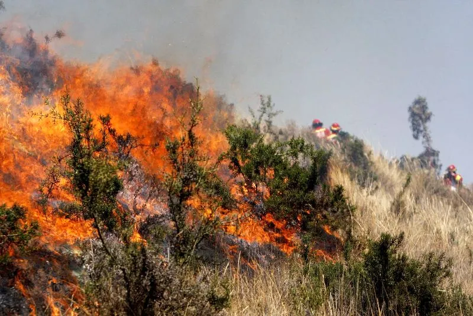

Situación: Impacto de la quema de bosques
En los últimos cinco años, en una región selvática se ha perdido una importante cantidad de bosque debido a incendios forestales provocados y naturales. La superficie total de la región es de 100,000 hectáreas, y se ha calculado que:
El 35% del total del bosque se ha quemado en los últimos cinco años.
De esta área afectada, el 60% fue causada por actividades humanas, como la agricultura y la deforestación ilegal, mientras que el 40% restante fue debido a incendios naturales.
El gobierno y organizaciones ambientales están trabajando en un plan de reforestación. Su objetivo es reforestar el 25% de la superficie afectada por los incendios causados por el ser humano en los próximos 10 años.
Preguntas para los estudiantes:
¿Cuántas hectáreas de bosque se han quemado en total en los últimos cinco años?
¿Cuántas hectáreas fueron afectadas por incendios provocados por actividades humanas?
¿Cuántas hectáreas planean reforestar en los próximos 10 años, si el objetivo es reforestar el 25% de las áreas quemadas por la actividad humana?
